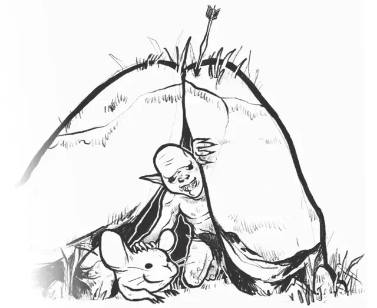

Гремлин
Jermlaine
Крошечный Гуманоид (Гремлин), нейтрально-злой

Класс Доспеха 11
Хиты 3 (1к4 + 1)
Скорость 30 футов
| мод | спас | ||
|---|---|---|---|
| СИЛ | 4 | −3 | −3 |
| ЛОВ | 12 | +1 | +1 |
| ТЕЛ | 13 | +1 | +1 |
| мод | спас | ||
|---|---|---|---|
| ИНТ | 10 | +0 | +0 |
| МДР | 11 | +0 | +0 |
| ХАР | 7 | −2 | −2 |
Навыки Скрытность +5
Чувства слепое зрение 60 футов, тёмное зрение 30 футов, пассивное Восприятие 10
Языки Подземный
Опасность 1/8 (25 опыта)
Бонус мастерства +2
Особенности
Сопротивление магии. Гремлин с преимуществом совершает спасброски от заклинаний и прочих магических эффектов.
Прячущиеся в тьме. Гремлин невидим для тёмного зрения.
Друг вредителей. Гремлин может общаться с крысами и гигантскими крысами, а так же понимать их.
Нападение толпой. Гремлин добавляет 1к4 к урону своего оружия, находясь в пределах 5 футов от другого гремлина, находящегося в сознании.
Действия
Дубинка. . Рукопашная атака оружием: −1 к попаданию, досягаемость 5 фт., одна цель. Попадание: 0 (1к4 − 3) дробящего урона.
Дротик. . Дальнобойная атака оружием: +3 к попаданию, дистанция 20/60 фт., одна цель. Попадание: 3 (1к4 + 1) колющего урона.
Описание
Гремлины доказывают, что даже крохотные вещи могут быть ужасными. Их крохотные тельца размером в фут едва вмещают в себя всю их жестокость и враждебность. Глубоко в Подземье гремлины прячутся в туннелях, подземельях и пещерах, населённых гораздо большим, более опасным народом. Гремлины ютятся в маленьких норах, избегая контакта со всеми другими существами, если только они не могут наброситься на тех подавляющим числом. Но когда шансы в их пользу, их злобная решимость поразительна и может сокрушить даже отлично вооруженный патруль дроу или военную отряд дуэргаров.
Злобные засады. Гремлины ненавидят и таят злобу на всех более крупных существ. Они прекрасно понимают, что их маленький размер и слабость в бою делают их лёгкой добычей для бесчисленных обитателей Подземья. Этот гнев и обида приводят к желанию отомстить всем крупным существам, которые входят в их владения. Гремлины внимательно следят, выжидая подходящего момента, чтобы обрушиться на ненавистных врагов. Нападая, они выбегают из своих нор подавляющими волнами. В пылу битвы отдельные гремлины даже бросаются на оружие мерзких здоровяков, чтобы упростить бой своим союзникам.
Скрытая угроза. Кожа гремлина грубая, жёсткая и похожа камень. То ли по замыслу какого-то сочувствующего им бога, то ли благодаря счастливой удаче, их шкура делает их невидимыми для тёмного зрения. Часть ненависти гремлинов происходит ещё и из-за попыток ловить их и шить плащи и другую одежду из их кожи. Такие эксперименты ни разу ещё не создали работающего магического предмета, и ненависть гремлинов к чужакам частично обусловлена их предположением, что любой пришелец хочет заполучить их шкуры.
Тайные логова. Из-за того, что на них охотятся ради еды и шкур, гремлины стараются скрыть свои логова от посторонних. Они роют туннели, узкие даже для их 1-футовых тел, из-за чего крупным врагам их практически невозможно преследовать. Гремлины роют туннели вдоль коридоров подземелий и троп Подземья, прячя входы в них, чтобы не пускать чужаков и устраивать засады. Гремлины прокапывают проходы в полу, в стенах и на потолке. Когда они нападают, то обрушиваются на врагов со всех сторон, пытаясь просто задавить их числом.
Союзные грызуны. Гремлины могут расшифровывать крысиные писки и так же общаться с этими грызунами. Исследователи Подземья знают, что нужно внимательно относиться к признакам появления крыс. Эти грызуны, как существа поверхностного мира, редки в глубоком Подземье. Их присутствие неизменно сигнализирует о колонии гремлинов.